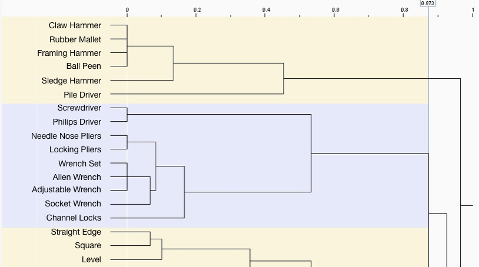

Amazon Hardware
Remote Card Sort
Problem
The Amazon Hardware team had a hunch that some customers were getting lost while looking for products that were difficult to categorize. The team was getting ready to refresh their navigation and wanted evidence for where these products should go in their browse-tree.
In this study I targeted recent hardware customers to get precise evidence on a tight timeline.

The browse tree (left side of the interface) can be used to browse for items and filter product results. In this case, selecting "Hand Planes" under "Tools and Home Improvement" would filter out irrelevant results such as the body surfing hand planes.
Research Plan
Card sorts are a natural choice for gathering evidence about information architecture, but the challenge in this case was finding a way to quickly target the right customers. Hardware is a specialized category and regular hardware customers may not be tripped up by categorization of specialized tools in the same way as novice shoppers. Focusing on experienced buyers, I worked with the customer email team at Amazon to identify and contact customers who had purchased a moderate to large amount of hardware products in the last few months. I used a vendor card sorting platform to have participants sort 2-3 dozen items into categories of their own choosing, iterating on the study instructions in pilot studies with Amazon employees.
Remote Card Sort
Once I had identified target customers and refined my study instructions, I deployed the study and monitored completions until I had 30-50 customers who had completed the study (Tullis suggests 20 but we erred on the side of stronger evidence). I purposefully emailed 30x more customers than I needed to complete the study due to prior response rates to customer emails in the range of 2-5% .
Results
I compiled my findings in a report for the Hardware team and met with them in person to review both my suggested changes to the browse tree, and the dendrogram summarizing study results that I used to make my recommendations. The Hardware team appreciated not only of the quick turn-around and concrete recommendations, but also seeing the dendrogram during our meeting so we could discuss the strength of evidence for various changes.
An example dendrogram produced by the vendor tool used in this study that shows how often pairs of items were grouped together. These are fake results.